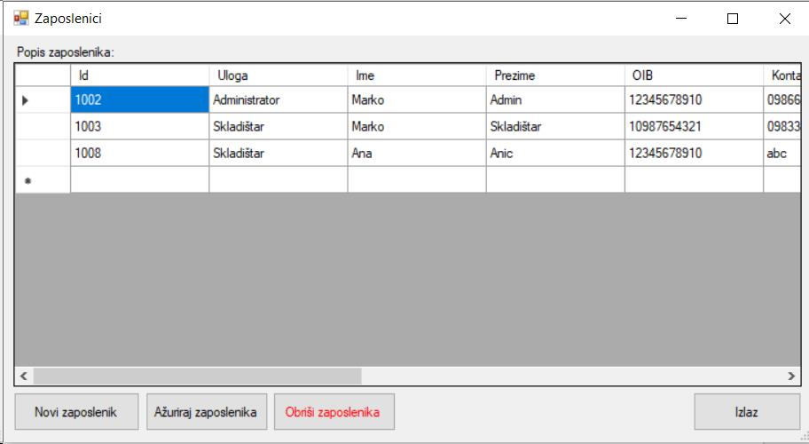

Klikom na tipku "Registracija zaposlenika" u glavnom izborniku otvara se prozor "Zaposlenici" koji sadrži popis zaposlenika i mogućnosti dodavanja, ažuriranja i brisanja zaposlenika. Klikom na "Novi zaposlenik" otvara se prazan obrazac "Registracija", a klikom na "Ažiriraj zaposlenika" otvara se obrazac registracija popunjen s već unešenim podacima selektiranog zaposlenika u popisu zaposlenika. Klikom na "Obriši zaposlenika", selektirani zaposlenik briše se iz sustava.
Klikom na "Izlaz" zatvara se prozor "Zaposlenici".
